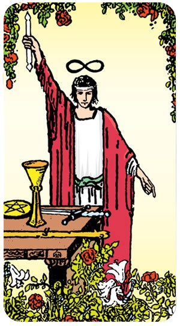

O Louco

Uma pessoa cujo Arcano Pessoal é 0 é representada pela carta "O Louco" no Tarot. O Louco é um símbolo de novos começos, aventura e liberdade. Aqui estão algumas características e desafios de alguém com o Arcano Pessoal 0:
Ele pode ser utilizado para compreender padrões financeiros, melhorar a vida material e emocional, e harmonizar a vida.
O Louco
Uma pessoa cujo Arcano Pessoal é 0 é representada pela carta "O Louco" no Tarot. O Louco é um símbolo de novos começos, aventura e liberdade. Aqui estão algumas características e desafios de alguém com o Arcano Pessoal 0:
Espontaneidade e Aventura: O Louco é conhecido por sua natureza aventureira e disposição para explorar o desconhecido. Essas pessoas geralmente têm um espírito livre e estão abertas a novas experiências, mesmo que isso signifique correr riscos.
Otimismo e Positividade: Elas tendem a ser otimistas e acreditam no melhor das pessoas e das situações. Esse traço pode levá-las a confiar mais em sua intuição do que em uma lógica rígida.
Independência e Liberdade: Valorizam a liberdade e a independência, muitas vezes preferindo traçar seu próprio caminho em vez de seguir as convenções estabelecidas.
Criatividade e Inovação: A mentalidade aberta e a disposição para experimentar novas ideias fazem delas pessoas criativas e inovadoras. Elas não têm medo de pensar fora da caixa.
Despreocupação e Alegria: Podem ser vistas como despreocupadas ou até mesmo inocentes, abraçando a vida com um senso de alegria e maravilha infantil.
Impulsividade: A mesma disposição para correr riscos pode levá-las a ser impulsivas, o que às vezes pode resultar em decisões precipitadas.
Falta de Foco: A constante busca por novas experiências pode dificultar a concentração em um objetivo ou projeto específico.
Naïveté: A confiança nas pessoas e situações pode deixá-las vulneráveis a decepções ou enganos.
Alguém com o Arcano Pessoal 0 pode ser visto como uma força da natureza, sempre movendo-se para frente e explorando novos horizontes. Pense em figuras históricas ou contemporâneas conhecidas por suas explorações ousadas ou por mudar paradigmas, como Cristóvão Colombo em suas viagens ao Novo Mundo ou inovadores modernos que desafiam o status quo.
O Louco nos lembra que, às vezes, o primeiro passo em uma nova jornada é simplesmente confiar no processo e no próprio caminho, mesmo quando ele não é totalmente claro.
O Mago
Uma pessoa cujo Arcano Pessoal é 1 é representada pela carta "O Mago" no Tarot. Esta carta é símbolo de potencial, habilidades e a capacidade de manifestar intenções e desejos. Aqui estão algumas características e desafios de alguém com o Arcano Pessoal 1:
Autoconfiança e Habilidade: O Mago é conhecido por sua autoconfiança e habilidade em manipular recursos à sua disposição. Essas pessoas geralmente têm uma forte crença em suas capacidades e habilidades.
Criatividade e Inovação: São criativas e capazes de trazer novas ideias à vida. Elas têm um talento especial para encontrar soluções inovadoras para problemas.
Iniciativa e Ação: O Mago é o mestre do início. Pessoas com este arcano são proativas e não hesitam em tomar a iniciativa. Elas são impulsionadas pela ação e raramente ficam paradas.
Comunicação Eficaz: Elas são comunicadoras eficazes, capazes de expressar suas ideias de forma clara e persuasiva. Têm a habilidade de convencer os outros de suas visões.
Foco e Concentração: Capazes de focar intensamente em seus objetivos e de canalizar suas energias de maneira produtiva. Elas sabem como manter o controle e a disciplina para alcançar o que desejam.
Arrogância: A autoconfiança pode, às vezes, se transformar em arrogância. Essas pessoas precisam estar atentas para não subestimar os outros ou se tornarem excessivamente autossuficientes.
Manipulação: Com grandes habilidades de comunicação e persuasão, há um risco de usar essas habilidades de maneira manipuladora.
Falta de Paciência: A necessidade constante de ação e progresso pode levar à impaciência. Essas pessoas podem se frustrar facilmente com atrasos ou obstáculos.
Uma pessoa com o Arcano Pessoal 1 pode ser vista como um líder nato, alguém que não apenas inicia projetos, mas também inspira e guia os outros. Pense em figuras históricas ou contemporâneas conhecidas por sua capacidade de transformar visões em realidade, como Steve Jobs, que trouxe inovação para o mundo da tecnologia com a Apple, ou Leonardo da Vinci, cuja criatividade e habilidade técnica deixaram um legado duradouro em diversas áreas.
O Mago nos lembra que temos os recursos e habilidades necessários para criar a nossa própria realidade. Ele nos encoraja a usar nosso potencial de maneira consciente e ética.